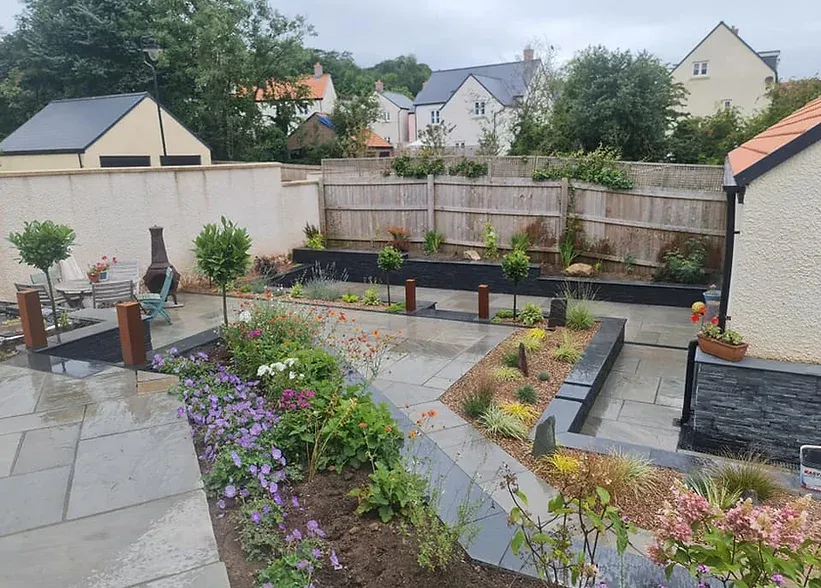

Heeft u vragen over tuinonderhoud, tuinaanleg of wilt u een vrijblijvende offerte?
Ik help u graag verder.

Wilt u tuinonderhoud, een nieuwe tuin of heeft u een andere vraag? Vul het formulier in en ik neem binnen 1 werkdag contact op.
Ma–Vr 08:00–18:00
Reactie binnen 1 werkdag
Zeist · De Bilt · Bilthoven · Bunnik